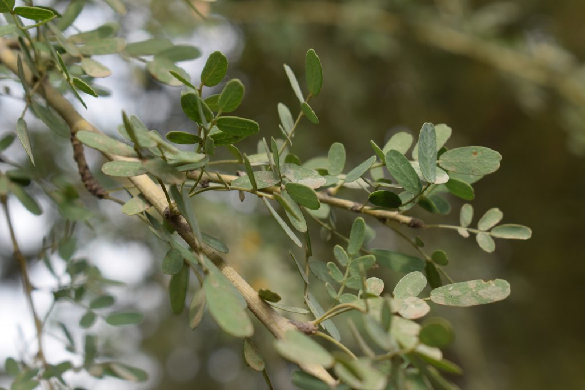
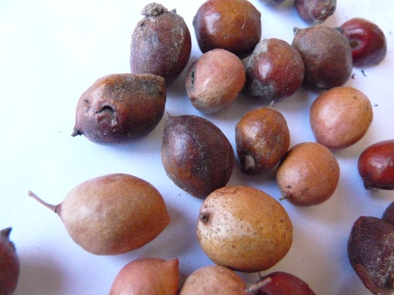
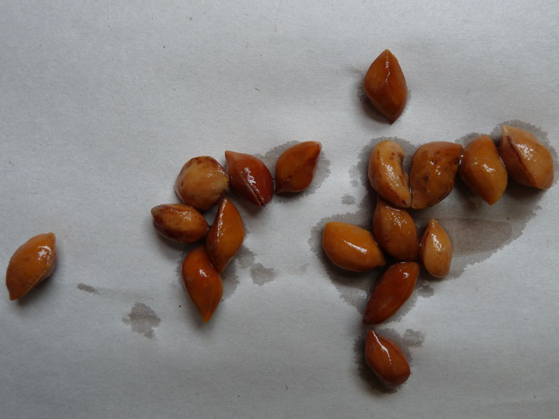

- Familia: rosáceas
- Tronco: generalmente retorcido y de tamaño pequeño a mediano.
- Corteza: color grisáceo y lisa, con grietas y fisuras con la edad.
- Copa: es densa y redondeada. Este arbusto tiende a tener una forma compacta y extendida, con ramas que se arquean ligeramente hacia abajo, creando un efecto de cascada.
- Hoja: hojas simples, alternas, dentadas o lobuladas, caducas.
- Flor: flores simples o dobles, de color rosa, rojo o blanco, aparecen antes de las hojas.
- Fruto: pomos amarillos o verdes, comestibles, ricos en vitamina C, utilizados para mermeladas y bebidas.
- Usos: los frutos son comestibles y se utilizan para mermeladas y bebidas. También se utiliza en jardinería como planta ornamental.
- Floración: comienza a florecer en primavera.
- Fructificacion: los frutos maduran en otoño.
- Reproducción: se reproduce por semillas y por esquejes, prefiriendo suelos bien drenados y soleados.

Hoja

Fruto

Semillas